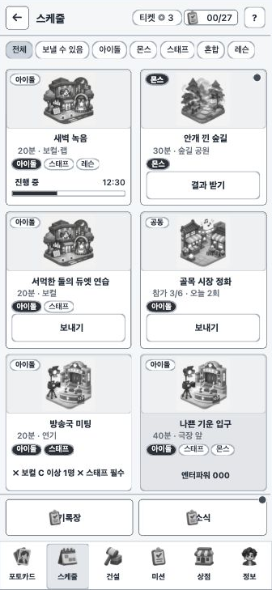
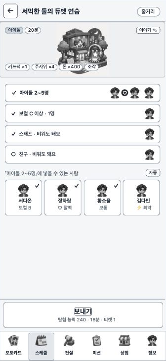
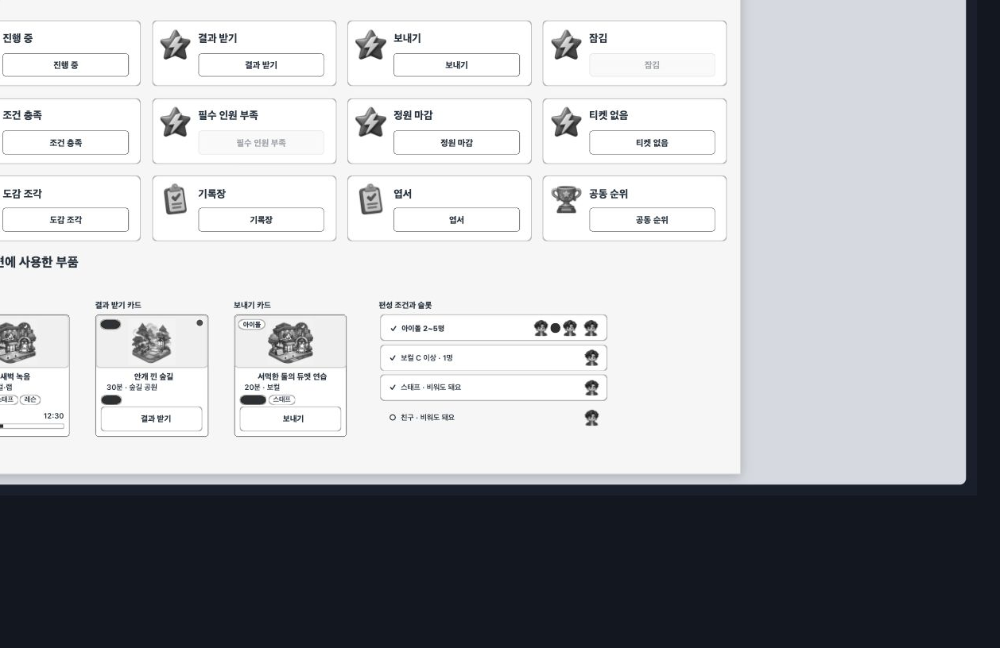

케이팝몬스터즈 · 7018 저장판 r4 · 390 × 844
홈의 스케줄 카드에서 편성 또는 진행, 이야기와 결과로 이어집니다. 도감·기록장·소식은 공통 팝업을 씁니다.


캔버스에서 각 기능 행의 왼쪽에서 시작해 상세와 상태를 확인합니다.
| 화면·ID | 입력과 목적지 | 표시 기준 |
|---|---|---|
① 스케줄 홈 · 한 목록home |
| 1티켓 · 하루 3장 · 최대 10 · 아이돌 · 몬스 같은 티켓 · 0장이면 숫자가 빨간 글자, 보내기 버튼이 「스케줄 티켓이 없어요 · 내일 3장 충전」으로 꺼짐 2📖 도감 · 기념 창(Ⓐ) · 완성 00/27 · 새 조각이 들어오면 빨간 점 3거르기 칩(옆으로 밀기) · 전체 / 보낼 수 있음 / 아이돌 / 몬스 / 스태프(필수) / 혼합 / 레슨 · 몬스 로비에서 들어오면 「몬스」가 켜진 채 4카드 1장 = 스케줄 1개 · 순서는 열리는 엔터파워 순으로 고정(뒤로 갈수록 보상 큼 · 상태로 바꾸지 않음) · 카드가 상태를 들고 있음: 결과 받기(빨간 점) / 진행 중(남은 시간 · 막대) / 보내기 / 못 보냄 / 잠김 · 누르면 상태대로 ② / ③ / ④ 5배지 · 아이돌 → 스태프 → 몬스 순 고정 · 진한 칩 = 꼭 필요 · 테두리 칩 = 넣으면 좋음 · 안 가는 것은 안 보임 · 레슨 3개에만 「레슨」 6공동 카드 · 친구들과 같이 하는 탐험 · 참가 n/6(내 팀 포함) · 오늘 남은 횟수 · 결과에 순위 7못 보냄 = 모자란 것을 전부 빨간 글자로 · 잠김 = 열리는 엔터파워 · 아래로 밀어 더 보기 8아래 고정 버튼 · 기록장 → Ⓒ · 소식 → Ⓓ(안 읽은 편지가 오면 빨간 점) |
② 보내기 · 아이돌 (탐험)dispatch-idol |
| 1대표 이미지 · 위에 종류 · 시간 · 이야기 바꾸기 · 아래에 받을 보상 2조건 줄 = 보낼 팀 · 줄마다 들어간 얼굴이 보이고 다 차면 ✓ · 실력 조건은 팀 중 1명만 넘으면 됨 · 안 가는 칸(스태프 · 몬스)은 줄 자체가 없음 · 꼭 필요한 칸은 「필수」, 아니면 「비워도 돼요」 · 두 아이돌 사이 ♡ = 찰떡 · 줄을 누르면 그 줄이 진하게 켜짐 · 경우별 줄은 ②-2 3켜진 줄에 넣을 수 있는 사람만(다른 스케줄에 간 사람은 안 나옴) · 누르면 넣기 / 빼기 · 이름 아래 = 이미 넣은 사람과의 케미 ♡ 찰떡 / 보통 / ⚡ 최악(최악 짝은 갈등 이야기가 진행됨 · 화해하면 「전화위복」) · 자동 = 조건에 맞게 한 번에 채우기 4보내기 · 능력 · 시간 · 티켓은 버튼 안에 |
② 출동 · 몬스 · 같은 틀dispatch-mons |
| 1대표 이미지 · 위에 종류 · 시간 · 아래에 받을 보상 · 위 버튼 공격 연출 보기 2조건 줄 = 출동 몬스 · 몬스 수 · 필요 속성 1마리 · 단 조건(있는 스케줄만) · 처음엔 몬스 화면 출동 편성 그대로 들어옴 · ★는 표시만 3켜진 줄에 넣을 수 있는 몬스만 · 쉬는 중(24시간) · 지킴이 · 수호 몬스는 안 나옴 · 조건 맞는 순 4출동하기 · 힘 · 시간 · 티켓은 버튼 안에 |
②-2 경우별로 바뀌는 줄 (같은 틀 · 예시 모음)dispatch-requirements |
| 1레슨 · 아이돌 1명만 보내면 개인 레슨 · 그 아이돌의 해당 세부 능력이 오름 · 2명 이상이면 보통 스케줄 2스태프 필수 · 직군 · ★ 조건 · 「스태프 없이」가 없음 · 빈칸이면 빨간 ✗ · 다른 스케줄에 간 스태프는 안 나옴 3혼합 · 몬스는 넣어도 되고 안 넣어도 됨 · 0~2마리 · 속성 상관없음 · 1단 이상 4팬 스케줄 · 팬클럽 회장은 고르는 칸 없이 자동으로 같이 감 · 줄은 보여 주기만 5친구 칸 · 엔터파워가 오르면 친구 팀이 늘어남 · 공동은 내 팀 포함 6팀까지 · 꽉 차면 「참가 정원이 찼어요」 6부족한 것 · 처음 걸린 하나가 아니라 전부 빨간 글자 7버튼이 꺼짐 · 티켓 0장이면 충전 안내 |
③ 진행 중 (진행 중 카드를 누르면)running |
| 1장면 · 보낸 팀이 걷는 모습(탐험은 아이돌 분신 몬스 · 출동은 몬스) 2장면 글 · 단계 이름 · 장면 제목 · n / 4 · 진행되는 만큼 넘어감(누르면 설명 한 줄 펼침) 3도시 속보 한 줄 4돌아오기까지 남은 시간 하나만 크게 5길 막대 · 지나온 길 진하게 · 5단계 이름은 아래 작게 6자세히(접기) · 같이 간 사람 · 받을 보상 · 이야기 · 친구 도움 요청 |
④-0 이야기 (「결과 받기」 카드를 누르면 먼저)story |
| 1이야기 배경 · 장면마다 그림이 바뀜 2장면 번호 · 탐험 4장면 / 출동 3장면 3건너뛰기 → 바로 ④ 결과 4장면 제목 + 글 · 고른 이야기 주제·행동으로 만든 사건이 들어감 · 화면을 누르면 다음 장면 · 마지막 장면 다음은 ④ 결과 |
④ 결과 · 한 장 (이야기 다음)result |
| 1대표 이미지 위에 도착 문구(탐험 「잘 다녀왔어요!」 · 출동 「씩씩하게 다녀왔어요!」) · ★ · 결과 등급 · 보상 % · 등급 4가지: 완벽 ★3 100% · 좋음 ★2 100% · 부분 ★1 50% · 실패 0%(④-1) 2받은 것 · 칸 하나 = 보상 하나 · 카드팩 · 주사위 · 돈 · 도감 조각(3/3이 되면 「완성!」 · 완성 보상은 같은 칸에 더해짐 · 누르면 Ⓐ) · 보물 상자 / 활동비 봉투(「열기」 · 안 열면 받기 때 자동) · 우정 포인트(친구가 같이 갔을 때만) · 없는 건 칸이 안 생김 3좋아진 것 · 이번에 오른 값만 줄마다 「전 → 후 ▲ 오른 만큼」 · 관계 · 짝 라포 · 레슨 능력 등 오른 항목만 4자세히(접기) · 서사 한 줄(기록장에도 남음) · 참가자 · 모두의 능력 · 내 능력 · 시간 보너스 · 점수 · 이야기 다시 보기 5공동일 때만 · 순위 창 ④-3 6받기 → 한 번에 다 받음 → 카드팩 열기(카드 획득 연출) → 이야기 카드를 발견했으면 ④-2 · 아니면 ① 카드가 다시 「보내기」 |
④-1 결과 · 아쉬울 때 (부분 ★1 / 실패)result-low |
| 1부분 ★1 · 보상 절반 2받은 것 · 절반이 된 수만 · 같은 칸 모양 3실패 ☆ · 보상 0% · 받은 것 대신 빈 칸 한 줄 4아쉬울 때도 같은 한 장 · 좋아진 것은 오른 게 있을 때만 |
④-2 아이템 이야기 (이야기 카드를 발견했을 때만 · 받기 다음)item-story |
| 1카드 인물 그림 · 발견한 이야기 카드의 아이돌 2아이템 이야기 · 물건의 단서 → 사연 → 아이돌 → 후일담 · 건너뛰기 가능 · 라포는 다시 안 오름 3확인 → ① 홈 · 상자 · 봉투 발견은 이 화면 없이 결과 안에서 바로 열림 |
④-3 공동 순위 (창 · 결과 「공동 순위 보기」)ranking |
| 1순위 줄 · 순위 · 얼굴 · 기획사 이름 · 기여도 막대 · 아래로 밀어 더 보기 21~3위 추가 보상(참가 2팀 이상일 때만) 3내 줄은 아래에 한 번 더 고정 |
Ⓐ 도감 · 기념 (창 · 홈 📖)collection |
| 1책갈피 · 도감(모험 발견) / 기념(우리의 기념) 26갈래 3항목 · 조각 n/3 · 조각은 쌓이기만 함 · 완성 ✓ = 보상 받은 항목(보기 전용) · 📖 빨간 점 = 새로 들어온 조각 |
Ⓐ-1 도감 항목 상세 (항목을 누르면)collection-item |
| 1아이템 그림 · 이름 2조각 n / 3 · 보상으로 받은 조각이 쌓임 · 조각은 줄지 않음 3이야기 · 3/3이 되면 열림(물건의 단서 → 사연 → 아이돌 → 후일담) 4완성 보상 · 카드팩 1 + 돈 · 주사위 · 항목마다 한 번 · 결과 화면 「받기」 때 이미 받음 → 「받음 ✓」 5반복 퍼즐 · 같은 그림 조각 9개가 모이면 열림 · 누르면 Ⓐ-2 |
Ⓐ-2 반복 퍼즐 (같은 그림 9조각 · 3×3)collection-puzzle |
| 13×3 판 · 맞춘 칸은 그림이 보임 · 완성 그림은 위 버튼으로 미리 보기 2모은 조각 · 이 그림 조각만(다른 그림과 섞지 않음) · 하나 누르고 판의 자리를 누름 · 배치는 저장됨 3보상 · 주사위 27 · 완성할 때만 조각 9개를 씀 4다 맞추면 켜짐 → 주사위 받고 다음 회차(처음부터 다시) |
Ⓑ 이야기 바꾸기 (창 · ② 「바꾸기」)story-edit |
| 1주제 · 행동 · 관계 대상(두 아이돌일 때만) · 누르면 고르기 2미리보기 · 오를 라포 · 보상량은 같음 |
Ⓒ 내 기록장 (창 · 홈 아래) · 내 엽서 담벼락journal |
| 1날짜로 나뉨 · 오늘 / 어제 / n월 n일 2내 엽서 · 「받기」를 누른 스케줄이 엽서로 남음 · 처음엔 🔒 나만 보기 3엽서 그림 · 장소 장면 + 제목 · 한 줄 4♡ · 💬 댓글 · 「친구들에게 보여주기」(친구 n명의 소식에 올라감) / 「다시 나만 보기」 · 엽서를 누르면 Ⓒ-1 5담아 온 엽서 · 친구 소식에서 「담기」한 엽서 · 원작자 표시 |
Ⓒ-1 엽서 자세히 · 댓글 (엽서를 누르면)journal-comments |
| 1엽서 크게 · 본문 전체 2댓글 목록 · 아직 없으면 「아직 댓글이 없어요」 3한 줄 댓글 남기기 |
Ⓓ 소식 (창 · 홈 아래) · 받은 편지 + 친구 엽서news |
| 1받은 편지 · 친구가 건넨 엽서 · 안 읽은 수 빨간 글자 · 누르면 Ⓓ-1 2친구 엽서 · 친구가 「보여주기」한 엽서가 시간 순으로 3♡ · 💬 · 「담기」 → 내 기록장에 「담아 온 엽서」로(원작은 그대로) 4담기는 하루 3장 · 다 쓰면 「오늘 담기를 다 썼어요」 |
Ⓓ-1 엽서가 도착했어요 (받은 편지를 누르면)postcard |
| 1친구가 건넨 엽서 · 보낸 사람 · 원작자 2나중에 = 받은 편지에 남김 · 기록장에 두기 = 내 기록장에 「담아 온 엽서」로 |
⑤ 해금 연출 (규칙서 · 어디서든)unlocked |
| 1「○○ 스케줄이 열렸습니다」 · 한 번에 여러 개 열리면 한 창에 묶어서 「n개가 열렸습니다」 2열린 카드 = 홈 카드와 같은 모양 · 카드가 아래 「스케줄」 버튼으로 빨려 들어감 3확인 → 아래 메뉴 스케줄에 빨간 점 |
스케줄 · 공통 부품 보드parts | 공통 실제 부품과 상태를 따로 편집합니다. | 원본의 목록 카드·버튼·상태를 별도 편집 부품으로 비교합니다. |

흑백 아이콘은 이미지 레이어, 글자와 숫자는 시스템 글꼴의 독립 텍스트입니다. 메인 하단은 HUD의 6칸을 재사용합니다. 가변 버튼은 공통 9슬라이스와 기본·초점·눌림·선택·비활성 상태를 씁니다.
숫자와 단위가 원본에 있으면 화면에 직접 표시합니다. 검수 예시, 확정값, 원본 결측은 구분합니다.
티켓 차감, 실제 편성 조건, 진행 시간과 보상 계산은 게임 데이터 연동에서 판정합니다. 헤더의 조건별 예시, 부분·실패 결과와 해금은 캔버스 상태 보드로 확인합니다. 모험 대상에 따라 연결하는 현황판 값은 원본을 따릅니다.